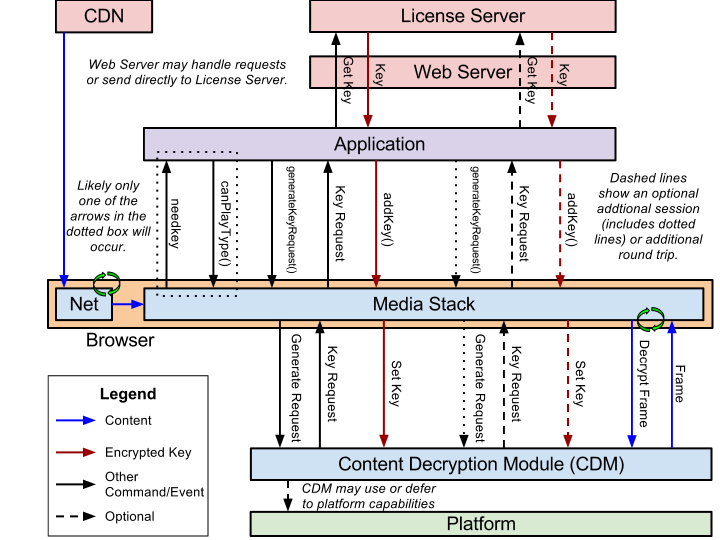

Copyright © 2013 W3C® (MIT, ERCIM, Keio, Beihang), All Rights Reserved. W3C liability, trademark and document use rules apply.
Abstract
This proposal extends HTMLMediaElement providing APIs to control playback of protected content.
The API supports use cases ranging from simple clear key decryption to high value video (given an appropriate user agent implementation).
License/key exchange is controlled by the application, facilitating the development of robust playback applications supporting a range of content decryption and protection technologies.
This specification does not define a content protection or Digital Rights Management system. Rather, it defines a common API that may be used to discover, select and interact with
such systems as well as with simpler content encryption systems. Implementation of Digital Rights Management is not required for compliance with this specification: only the simple
clear key system is required to be implemented as a common baseline.
The common API supports a simple set of content encryption capabilities, leaving application functions such as authentication and authorization to page authors. This is achieved by
requiring content protection system-specific messaging to be mediated by the page rather than assuming out-of-band communication between the encryption system and a license
or other server.
Status of This Document
This section describes the status of this document at the time of its publication. Other documents may supersede this document.
A list of current W3C publications and the latest revision of this technical report can be found in the
W3C technical reports index at http://www.w3.org/TR/.
Implementors should be aware that this specification is not stable. Implementors who are not taking part in the discussions are likely to find the specification changing out from under them in incompatible ways. Vendors interested in implementing this specification before it eventually reaches the Candidate Recommendation stage should join the mailing list mentioned below and take part in the discussions.
This document was published by the HTML working group as an Editor's Draft.
Please submit comments regarding this document by using the W3C's (public bug database) with the product set to HTML WG and the component set to
Encrypted Media Extensions.
If you cannot access the bug database, submit comments to public-html-media@w3.org
(subscribe,
archives) and arrangements will be made to transpose the comments to the bug database.
All feedback is welcome.
Publication as an Editor's Draft does not imply endorsement by the W3C Membership. This is a draft document and may be updated,
replaced or obsoleted by other documents at any time. It is inappropriate to cite this document as other than work in progress.
Note: It is an open issue whether and how the spec should do more to encourage/ensure CDM-level interop. See Bug 20944.
Note: It is an open issue whether and how the spec should provide privacy guidance for CDM implementations. See Bug 20965 and Bug 20966.
This document was produced by a group operating under the 5 February 2004 W3C Patent Policy.
W3C maintains a public list of any patent disclosures made in connection with
the deliverables of the group; that page also includes instructions for disclosing a patent. An individual who has actual knowledge of a patent which
the individual believes contains Essential Claim(s) must disclose the
information in accordance with section 6 of the W3C Patent Policy.
Table of Contents
1. Introduction
This section is non-normative.
This proposal allows JavaScript to select content protection mechanisms, control license/key exchange, and implement custom license management algorithms.
It supports a wide range of use cases without requiring client-side modifications in each user agent for each use case.
This also enables content providers to develop a single application solution for all devices.
A generic stack implemented using the proposed APIs is shown below.
This is just an example flow and is not intended to show all possible communication or uses.

1.1 Goals
This section is non-normative.
This proposal was designed with the following goals in mind:
- Support simple decryption without the need for DRM servers, etc.
- Support a wide range of media containers and codecs.
- Support a range of content security models, including software and hardware-based models
- Stream reusability - the actual encrypted content stream/file for a given container/codec should be identical regardless of the user agent and content decryption and protection mechanism.
- Support a wide range of use cases.
- Flexibility (and control) for applications and content providers without requiring client/user agent updates.
- Minimize additions to HTMLMediaElement and new capabilities added to the user agent.
- Defer all information and algorithms about the content decryption and protection solution to the application/server and client content decryption module. The user agent should just pass information.
- The user agent should not be responsible for communication with license servers.
- The user agent should not select among content decryption and protection options. The application should make this decision.
- Note: Applications are already capable of everything required except secure decryption and decode.
- Compatible with adaptive streaming.
- Usability.
1.2. Definitions
Text in this font and color is non-normative.
1.2.1. Content Decryption Module (CDM)
This section is non-normative.
The Content Decryption Module (CDM) is a generic term for a part of or add-on to the user agent that provides functionality for one or more Key Systems.
Implementations may or may not separate the implementations of CDMs and may or may not treat them as separate from the user agent.
This is transparent to the API and application.
A user agent may support one or more CDMs.
1.2.2. Key System
A Key System is a generic term for a decryption mechanism and/or content protection provider.
Key System strings provide unique identification of a Key System.
They are used by the user agent to select the Content Decryption Modules and identify the source of a key-related event.
Simple Decryption Key Systems are supported by all user agents. User agents may also provide additional CDMs with corresponding Key System strings.
A Key System string is always a reverse domain name. For example, "com.example.somesystem".
Within a given system ("somesystem" in the example), subsystems may be defined as determined by the key system provider.
For example, "com.example.somesystem.1" and "com.example.somesystem.1_5".
Key System providers should keep in mind that these will be used for comparison and discovery, so they should be easy to compare and the structure should remain reasonably simple.
1.2.3. Session ID
A session ID is an optional string ID used to associate calls related to a key/license lifetime, starting with the request.
It is a local binding between a request and key/license.
It does not associate keys or licenses for different streams (i.e. audio and video).
If supported by the Key System, it is generated by the user agent/CDM and provided to the application in the keymessage event.
(Session IDs need not necessarily be supported by the underlying content protection client or server.)
If Session IDs are supported, a new one will be generated each time createSession() successfully creates a MediaKeySession object.
The user agent/CDM manage the lifetime of Session IDs.
All Session IDs are cleared from the media element when a load occurs, although the CDM may retain them for longer periods.
Each SessionID shall be unique within the browsing context in which it was created. If secure proof of key release is supported each Session ID shall
be unique within the origin. Note that this last requirement implies that Session IDs shall be unique over time including across browsing sessions.
Applications should always provide the session ID from an event in subsequent calls for this key or license.
(This is a best practice, even if the current Key System does not support session IDs.)
This may mean that the application must associate a server response with the session ID and provide them both to update().
1.2.4. Initialization Data
This section is non-normative.
Initialization Data is a generic term for container-specific data that is used by Content Decryption Modules to generate a key request.
It should always allow unique identification of the key or keys needed to decrypt the content, possibly after being parsed by a CDM or server.
Key Systems usually require a block of initialization data containing information about the stream to be decrypted before they can construct a key request message.
This block could be as simple as a key or content ID to send to a server or as complex as an opaque Key System-specific collection of data.
This initialization information may be obtained in some application-specific way or may be stored with the media data.
Container formats may provide for storage of such information, possibly for multiple Key Systems in a single media file.
Initialization data found in the media data is provided to the application in the initData attribute of the needkey event.
This data has a container-specific format and is assumed to contain one or more generic or Key System-specific sets of initialization information.
2. Media Element Extensions
We extend media element to allow decryption key acquisition to be handled in JavaScript.
Note: For some CDMs, "key" and "key request" correspond to "license" and "license request", respectively.
partial interface HTMLMediaElement {
// Encrypted Media
readonly attribute MediaKeys keys;
void setMediaKeys(MediaKeys mediaKeys);
attribute EventHandler onneedkey;
};
[Constructor (DOMString keySystem)]
interface MediaKeys {
readonly attribute DOMString keySystem;
MediaKeySession createSession(DOMString? type, Uint8Array? initData);
static bool isTypeSupported(DOMString type, DOMstring keySystem);
};
interface MediaKeySession : EventTarget {
// error state
readonly attribute MediaKeyError? error;
// session properties
readonly attribute DOMString keySystem;
readonly attribute DOMString sessionId;
// session operations
void update(Uint8Array key);
void close();
};
partial interface HTMLSourceElement {
attribute DOMString keySystem;
};
The keys attribute is the MediaKeys being used when decrypting encrypted media data for this media element.
The setMediaKeys method provides the MediaKeys to use. When calling this method, the media element must run the following steps:
-
If loading has not started, throw an INVALID_STATE_ERR.
In general, applications should wait for an event named needkey or loadstart (per the resource fetch algorithm) before calling this method.
- Set the
keys attribute of the media element to mediaKeys.
The onneedkey event handler for the needkey event must be supported by all HTMLMediaElements as both a content attribute and an IDL attribute.
The MediaKeys(keySystem) constructor must run the following steps:
If keySystem is null or an empty string, throw an INVALID_ACCESS_ERR exception and abort these steps.
If keySystem is not one of the user agent's supported Key Systems, throw a NOT_SUPPORTED_ERR and abort these steps.
Let cdm be the content decryption module corresponding to keySystem.
-
Load cdm if necessary.
Issue 1
Bug 20991 - The CDM should be loaded asynchronously.
- If cdm fails to load or initialize
-
Create a new MediaKeyError object with the following attributes:
Set the new object's error attribute to the error object created in the previous step.
queue a task to fire a simple event named keyerror at the new object.
Abort these steps.
- Create a new
MediaKeys object.
Let the keySystem attribute be keySystem.
- Return the new object to the caller.
When destroying a MediaKeys object, follow the steps in close().
The keySystem attribute is an identifier for the Key System being used.
The createSession(type, initData) method must run the following steps:
Note: The contents of initData are container-specific Initialization Data.
If type is null or an empty string and initData is not null or an empty string, throw an INVALID_ACCESS_ERR exception and abort these steps.
If type contains a MIME type that is not supported or is not supported by the keySystem, throw a NOT_SUPPORTED_ERR exception and abort these steps.
Let cdm be the cdm loaded in the MediaKeys constructor.
- Create a new
MediaKeySession object.
Let the keySystem attribute be keySystem.
Let the sessionId attribute be a unique Session ID string. It may be generated by cdm.
Add the new object to an internal list of session objects.
-
Schedule a task to generate a key request, providing type, initData, and the new object.
The user agent will asynchronously execute the following steps in the task:
Let defaultURL be null.
-
Use cdm to generate a key request and follow the steps for the first matching condition from the following list:
- If a request is successfully generated
-
-
Let key request be a key request generated by the CDM using initData, if provided.
Note: cdm must not use any stream-specific data, including media data, not provided via initData.
type may be used to determine how to interpret initData.
If initData is not null and contains a default URL for keySystem, let defaultURL be that URL.
- Otherwise
-
Create a new MediaKeyError object with the following attributes:
Set the MediaKeySession object's error attribute to the error object created in the previous step.
queue a task to fire a simple event named keyerror at the MediaKeySession object.
Abort the task.
-
queue a task to fire a simple event named keymessage at the new object
The event is of type MediaKeyMessageEvent and has:
Note: message may be a request for multiple keys, depending on the keySystem and/or initData. This is transparent to the application.
- Return the new object to the caller.
The isTypeSupported(type, keySystem) method returns whether keySystem is supported with the specified container and codec type(s).
The following list shows some examples.
- Returns whether the Some System Key System is supported. Specific containers and codecs may or may not be supported with Some System.
MediaKeys.isTypeSupported(null, "com.example.somesystem")
- Returns whether version 1.5 of the Some System Key System is supported. Specific containers and codecs may or may not be supported with Some System 1.5.
MediaKeys.isTypeSupported(null, "com.example.somesystem.1_5")
- Returns whether the Some System Key System is present and supports the container and codec(s) specified by mimeType.
MediaKeys.isTypeSupported(mimeType, "com.example.somesystem")
- Returns whether the user agent supports Clear Key Simple Decryption of the container and codec(s) specified by mimeType.
MediaKeys.isTypeSupported(mimeType, "org.w3.clearkey")
It must run the following steps:
If keySystem contains an unrecognized or unsupported Key System, return false and abort these steps.
If type is null or an empty string, return true and abort these steps.
If the Key System specified by keySystem does not support decrypting the container and/or codec specified by type, return false and abort these steps.
Return true.
The error attribute is a MediaKeyError representing the current error state of the session. It is null if there is no error.
The sessionId attribute is the Session ID for this object and the associated key(s) or license(s).
The update(key) method must run the following steps:
Note: The contents of key are keySystem-specific.
It may be a raw key or a license containing a key.
The contents may also vary depending on the container, key length, etc.
If the argument is null or an empty array, throw an INVALID_ACCESS_ERR.
-
Schedule a task to handle the call, providing key.
The user agent will asynchronously execute the following steps in the task:
Let cdm be the cdm loaded in the MediaKeys constructor.
Let did store key be false.
Let next message be null.
-
Use cdm to handle key.
Note: For some Key Systems, key may be a license or other structure containing multiple keys.
Process key.
-
For each individual key in key, store the individual key.
Let key ID be the key ID associated with the individual key.
-
Store the individual key by following the steps for the first matching condition from the following list:
If a stored key already exists for key ID, delete that key.
Store the individual key, license, and/or license information indexed by key ID. The replacement algorithm is Key System-dependent.
Note: It is recommended that CDMs support a standard and reasonably high minimum number of cached keys/licenses (with IDs) per MediaKeySession object as well as a standard replacement algorithm.
This enables a reasonable number of key rotation algorithms to be implemented across user agents and may reduce the likelihood of playback interruptions in use cases that involve various streams in the same element (i.e. adaptive streams, various audio and video tracks) using different keys.
Let did store key be true.
If another message needs to be sent to the server, let next message be that message.
- If did store key is true and the media element is waiting for a key, queue a task to attempt to resume playback.
In other words, resume playback if the necessary key is provided.
-
If next message is not null, queue a task to fire a simple event named keymessage at the MediaKeySession object.
The event is of type MediaKeyMessageEvent and has:
If did store key is true, queue a task to fire a simple event named keyadded at the MediaKeySession object.
-
If any of the preceding steps in the task failed
-
Create a new MediaKeyError object with the following attributes:
Set the MediaKeySession object's error attribute to the error object created in the previous step.
queue a task to fire a simple event named keyerror at the MediaKeySession object.
Abort the task.
The key acquisition process may involve the web page handling keymessage events, sending the message to a Key System-specific service, and calling update with the response message.
update calls may generate keyadded or keymessage events.
During the process, the web page may wish to cancel the acquisition process.
For example, if the page cannot contact the license service because of network issues it may wish to fallback to an alternative key system.
The page calls close() to cancel the a key acquisition session.
The close() method causes the key acquisition session to close and all keys to be released. It must run the following steps:
- Clear any internal state associated with the session, including all keys and licenses.
The keySystem attribute of HTMLSourceElement specifies the Key System to be used with the media resource.
The resource selection algorithm is modified to check the keySystem attribute after the existing step 5 of the Otherwise branch of step 6:
⌛ If candidate has a keySystem attribute whose value represents a Key System that the user agent knows it cannot use with type, then end the synchronous section, and jump down to the failed step below.
2.1. Error Codes
MediaError is extended, and a new error type is added.
partial interface MediaError {
const unsigned short MEDIA_ERR_ENCRYPTED = 5;
};
interface MediaKeyError {
const unsigned short MEDIA_KEYERR_UNKNOWN = 1;
const unsigned short MEDIA_KEYERR_CLIENT = 2;
const unsigned short MEDIA_KEYERR_SERVICE = 3;
const unsigned short MEDIA_KEYERR_OUTPUT = 4;
const unsigned short MEDIA_KEYERR_HARDWARECHANGE = 5;
const unsigned short MEDIA_KEYERR_DOMAIN = 6;
readonly attribute unsigned short code;
readonly attribute unsigned long systemCode;
};
-
session . error .
code
-
Returns the current error's error code, from the list below.
-
session . error .
systemCode
-
Returns the current error's system code.
The code attribute of a MediaError may additionally return the following:
-
MEDIA_ERR_ENCRYPTED (numeric value 5)
- The stream could not be played because it is encrypted and one of the following:
- No key was provided and no
needkey handler was provided
- The provided key could not be successfully applied
- The user agent does not support decryption of this media data
The code attribute of a MediaKeyError object must return the code for the error, which must be one of the following:
-
MEDIA_KEYERR_UNKNOWN (numeric value 1)
- An unspecified error occurred. This value is used for errors that don't match any of the following codes.
-
MEDIA_KEYERR_CLIENT (numeric value 2)
- The Key System could not be installed or updated.
-
MEDIA_KEYERR_SERVICE (numeric value 3)
- The message passed into
update indicated an error from the license service.
-
MEDIA_KEYERR_OUTPUT (numeric value 4)
- There is no available output device with the required characteristics for the content protection system.
-
MEDIA_KEYERR_HARDWARECHANGE (numeric value 5)
- A hardware configuration change caused a content protection error.
-
MEDIA_KEYERR_DOMAIN (numeric value 6)
- An error occurred in a multi-device domain licensing configuration. The most common error is a failure to join the domain.
The systemCode attribute of a MediaKeySession object is a Key System-dependent status code for the error that occurred.
This allows a more granular status to be returned than the more general code.
It should be 0 if there is no associated status code or such status codes are not supported by the Key System.
3. Events
3.1. Event Definitions
[Constructor(DOMString type, optional MediaKeyMessageEventInit eventInitDict)]
interface MediaKeyMessageEvent : Event {
readonly attribute Uint8Array message;
readonly attribute DOMString? destinationURL;
};
dictionary MediaKeyMessageEventInit : EventInit {
Uint8Array message;
DOMString? destinationURL;
};
[Constructor(DOMString type, optional MediaKeyNeededEventInit eventInitDict)]
interface MediaKeyNeededEvent : Event {
readonly attribute Uint8Array? initData;
};
dictionary MediaKeyNeededEventInit : EventInit {
Uint8Array? initData;
};
-
event .
destinationURL
-
Returns the URL to send the message to.
-
event .
initData
-
Returns the Initialization Data related to the event.
-
event .
message
-
Returns the message (i.e. key request) to send.
The initData attribute contains Initialization Data specific to the event.
The message attribute contains a message from the CDM. Messages are Key System-specific. In most cases, it should be sent to a key server.
The destinationURL is the URL to send the message to.
An application may override this.
In some cases, it may have been provided by the media data.
It may be null.
If a response (i.e. a license) is necessary, applications should use one of the new methods to provide the response.
3.2. Event Summary
The following events are fired at MediaKeySession.
| Event name |
Interface |
Dispatched when... |
Preconditions |
keyadded |
Event |
A key has been added as the result of a update() call.
|
|
keyerror |
Event |
An error occurs in the session. |
|
keymessage |
MediaKeyMessageEvent |
A message has been generated (and likely needs to be sent to a server).
For example, a key request has been generated as the result of a createSession() call or another message must be sent in response to an update() call.
|
|
The following event is fired at HTMLMediaElement.
| Event name |
Interface |
Dispatched when... |
Preconditions |
needkey |
MediaKeyNeededEvent |
The user agent needs a key or license to begin or continue playback.
It may have encountered media data that may/does require decryption to load or play OR need a new key/license to continue playback.
|
readyState is equal to HAVE_METADATA or greater.
It is possible that the element is playing or has played.
|
4. Algorithms
4.1. First Time a Key Reference is Encountered
The following steps are run when the media element encounters a source that may contain encrypted blocks or streams during the resource fetch algorithm:
Let cdm be null.
Let initData be null.
If Initialization Data was encountered, let initData be that initialization data.
-
Determine whether there is an active CDM by following the steps for the first matching condition from the following list:
- If the media element's
keys attribute is not null
- Let cdm be the cdm loaded in the
MediaKeys constructor.
- Otherwise
- Jump to the Need Key step below.
-
Use cdm to determine whether the key is known:
Let key ID be null.
If a key ID for the source is known at this time, let key ID be that ID.
If initData is not null and contains a key ID, let key ID be that ID.
-
Determine whether the key is already known by following the steps for the first matching condition from the following list:
- If key ID is not null
-
Determine whether the key is known by following the steps for the first matching condition from the following list:
- If there is a key cached for key ID
- Jump to the Continue Normal Flow step below.
- Otherwise
- Jump to the Need Key step below.
- Otherwise
-
Determine whether the key is known by following the steps for the first matching condition from the following list:
- If there is a single key cached (with or without a key ID)
- Jump to the Continue Normal Flow step below.
- Otherwise
- Jump to the Need Key step below.
-
Need Key: queue a task to fire a simple event named needkey at the media element.
The event is of type MediaKeyNeededEvent and has:
Firing this event allows the application to begin acquiring the key process before it is needed.
Note that readyState is not changed and no algorithms are aborted. This event is merely informative.
Continue Normal Flow: Continue with the existing media element's resource fetch algorithm.
4.2. Encrypted Block Encountered
The following steps are run when the media element encounters a block (i.e. frame) of encrypted media data during the resource fetch algorithm:
Let cdm be null.
Let block key be null.
-
Determine whether there is an active CDM by following the steps for the first matching condition from the following list:
- If the media element's
keys attribute is not null
- Let cdm be the cdm loaded in the
MediaKeys constructor.
- Otherwise
- Jump to the Key Presence step below.
-
Use cdm to select the key:
Let block key ID be be the key ID for the current block.
If cdm has a key cached for block key ID, let block key be the matching cached key.
-
Key Presence: Handle the presence of a key by following the steps for the first matching condition from the following list:
- If cdm is not null and block key is not null.
- Use cdm to Decrypt the block using block key by following the steps for the first matching condition from the following list:
- If decryption fails
- Abort media element's resource fetch algorithm and run the steps to report a
MEDIA_ERR_ENCRYPTED error.
- Otherwise
- Continue.
Note: Not all decryption problems (i.e. using the wrong key) will result in a decryption failure. In such cases, no error is fired here but one may be fired during decode.
- If there is an event handler for
needkey
-
Take no action.
The media element is said to be potentially playing
unless playback stops because the stream cannot be decrypted, in which case the media element is said to be waiting for a key.
- Otherwise
- Abort media element's resource fetch algorithm and run the steps to report a
MEDIA_ERR_ENCRYPTED error.
For frame-based encryption, this may be implemented as follows when the media element attempts to decode a frame as part of the resource fetch algorithm:
Let encrypted be false.
-
Detect whether the frame is encrypted.
- If the frame is encrypted
- Run the steps above.
- Otherwise
- Continue.
Decode the frame.
Provide the frame for rendering.
The following paragraph is added to Playing the media resource.
- A media element is said to be waiting for a key when
it would be
potentially playing but
the user agent has reached a point in the media resource that must be decrypted for the resource to continue and the CDM does not have the necessary key.
- The media element leaves this state when seeking but could re-enter it if the same conditions exist.
4.3. Addition to Media Element Load Algorithm
The following step is added to the existing media element load algorithm:
5. Key Release
Note: it is an open issue whether further normative specification of this feature is required. See Bug 17199.
5.1. Introduction
This section is non-normative.
The above sections provide for delivery of key/license information to a Content Decryption Module.
This section provides for management of the entire key/license lifecycle, that is, secure proof of key release.
Use cases for such proof include any service where is it necessary for the service to know, reliably, which granted keys/licences are still available for use by the user and which have been deleted.
Examples include a service with restrictions on the number of concurrent streams available to a user or a service where content is available on a rental basis, for use offline.
Secure proof of key release must necessarily involve the CDM due to the relative ease with which scripts may be modified.
The CDM must provide a message asserting, in a CDM-specific form, that a specific key or license has been destroyed.
Such messages must be cached in the CDM until acknowledgement of their delivery to the service has been received.
This acknowledgement must also be in the form of a CDM-specific message.
The mechanism for secure proof of key release operates outside the scope of any media element.
This is because proof-of-release messages may be cached in CDMs after the associated media elements have been destroyed.
Proof-of-key-release messages are subject to the same origin policy: they shall only be delivered to scripts with the same origin as the script which created the media element that provided the key/license.
6. Simple Decryption
All user agents must support the simple decryption capabilities described in this section regardless of whether they support a more advanced CDM.
This ensures that there is a common baseline level of protection that is guaranteed to be supported in all user agents, including those that are entirely open source.
Thus, content providers that need only basic protection can build simple applications that will work on all platforms without needing to work with any content protection providers.
6.1. Clear Key
The "org.w3.clearkey" Key System indicates a plain-text clear (unencrypted) key will be used to decrypt the source.
No additional client-side content protection is required.
Use of this Key System is described below.
The keySystem parameter and keySystem attributes are always "org.w3.clearkey".
The sessionId string is numerical.
The initData attribute of the needkey event and the initData parameter of createSession() are the same container-specific Initialization Data format and values.
If supported, these values should provide some type of identification of the content or key that could be used to look up the key (since there is no defined logic for parsing it).
For containers that support a simple key ID, it should be a binary array containing the raw key ID.
For other containers, it may be some other opaque blob or null.
The MediaKeyMessageEvent generated by createSession() has:
-
message = a container-specific value extracted from the initData parameter of createSession(). null if initData was null or a value could not be extracted.
destinationURL = value of the default URL if present in the media data and null otherwise.
The key parameter of update() should be a JSON Web Key (JWK) representation of the symmetric key to be used for decryption, as defined in the IETF Internet-draft JSON Private and Symmetric Key specification. The JSON string is encoded into the Uint8Array parameter using ASCII-compatible character encoding.
When the JWK 'key type' ("kty") member value is 'octet sequence' ("oct"), the 'key value' ("k") member will be a base64 encoding of the octet sequence containing the symmetric key value.
For example, the following contains a single symmetric key represented as a JWK, designated as being for use with the AES Key Wrap algorithm (line breaks for readability, only).
{
"keys":
[{
"kty":"oct",
"alg":"A128KW",
"kid":"67ef0gd8pvfd0=",
"k":"GawgguFyGrWKav7AX4VKUg"
}]
}
7. Container Guidelines
This document describes behavior independent of specific media containers.
The following sections provide container-specific details for implementations that choose to support those containers.
7.1 WebM
This section defines the stream format and Initialization Data for implementations that choose to support WebM.
Encrypted WebM streams are encrypted at the block level with AES-128 CTR encryption.
The container shall include appropriate values within the ContentEncryption element.
WebM streams may be partially encrypted, both at the Track level and the block level.
In the former case, a subset of Tracks in the stream have a ContentEncryption element.
In the latter case, a subset of the blocks within a Track containing a ContentEncryption element are marked as encrypted.
7.1.2. Detecting Encryption
When a WebM Track is parsed, the presence of a ContentEncKeyID element shall indicate that the stream is potentially encrypted. Each time a new value is encountered in a ContentEncKeyID element, the First Time a Key Reference is Encountered algorithm shall be invoked with the value in that element as initData.
Encrypted blocks are those marked encrypted by the Signal Byte.
7.1.3. Initialization Data and Events
Initialization Data in events is always a key ID, which is the ContentEncKeyID of the current Track.
The current Track is the one being parsed or that contains the block being decrypted.
Events only contain a single key ID.
However, if supported by the key system, multiple key IDs may be bundled by the application before requesting a key and multiple key ID-key pairs may be returned by the license server.
An event will be fired for each new key ID (in ContentEncKeyID) encountered for which a key is not already known.
7.2 ISO Base Media File Format
This section defines the stream format and initialization data for ISO Base media File Format (ISOBMFF) content.
The stream format is dependent upon the protection scheme, as defined in the scheme type box ('schm').
For example, under the common encryption ("cenc") protection scheme, ISOBMFF content is encrypted at the sample level with AES-128 CTR encryption, according to ISO/IEC 23001-7:2012, "Information technology - MPEG system technologies - Part 7: Common encryption in ISO base media file format files". This protection method enables multiple Key Systems to decrypt the same media content.
7.2.2 Detecting Encryption
Protection scheme signaling conforms with ISO/IEC 14496-12. When protection has been applied, the stream type will be transformed to 'encv' for video or 'enca' for audio, with a scheme information box ('sinf') added to the sample entry in the sample description box ('stsd'). The scheme information box ('sinf') will contain a scheme type box ('schm') with a scheme_type field set to the 4CC value of the protection scheme.
Additionally, if the protection scheme is common encryption ("cenc"), the "encrypted block" is a sample. Determining whether a sample is encrypted depends on the corresponding track encryption box ('tenc') and the sample group associated with the sample. In this case the default encryption state of a sample is defined by the IsEncrypted flag in the associated track encryption box ('tenc'). This default state may be modified by the IsEncrypted flag in the Sample Group Description Box ('sgpd'), pointed to by an index in the Sample to Group Box ('sbgp').
For complete information about "cenc" see ISO/IEC 23001-7:2012.
7.2.3 Initialization Data and Events
For ISOBMFF the InitData begins with a the protection scheme information box ('sinf'). The 'sinf' includes the scheme type box ('schm'), giving the scheme_type, and the scheme information box ('schi').
If this scheme_type is common encryption ("cenc"), the scheme information box will also contain the track encryption box ('tenc'), giving the defaults for IsEncrypted, IV_size and KID for that track. In addition, one or more protection system specific heder boxes ('pssh') will be concatenated after the 'sinf' box.
In a file encrypted with common encryption, each key is identified by a Key ID and each encrypted sample is associated with the Key ID of the key needed to decrypt it. This association is signaled either through the specification of a default Key ID in the track encryption box ('tenc') or by assigning the sample to a Sample Group, the definition of which specifies a Key ID. Common encryption files may contain a mixture of encrypted and unencrypted samples. Playback of unencrypted samples should not be impeded by unavailability of the keys needed to decrypt other samples in the same file or track.
Note that if there is already an active Key System CDM and the key storage for that Key System already contains the key associated with the Key ID, there is no need to generate a needkey event.
8. Examples
This section and its subsections are non-normative.
This section contains example solutions for various use cases using the proposed extensions.
These are not the only solutions to these use cases.
Video elements are used in the examples, but the same would apply to all media elements.
In some cases, such as using synchronous XHR, the examples are simplified to keep the focus on the extensions.
8.1. Source and Key Known at Page Load (Clear Key Encryption)
In this simple example, the source file and clear-text key are hard-coded in the page.
This example is very simple because it does not care when the key has been added or associating that event with the update() call. It also does not handle errors.
<script>
function load() {
var video = document.getElementById("video");
if (!video.keys)
video.keys = video.MediaKeys("org.w3.clearkey");
if (!video.keys)
throw "Could not create MediaKeys";
var keySession = video.keys.createSession();
if (!keySession)
throw "Could not create key session";
keySession.addEventListener("keymessage",handleMessage,false);
}
function handleMessage(event) {
var keySession = event.target;
var key = new Uint8Array([ ... ]);
keySession.update(key);
}
</script>
<body onload="load()">
<video src="foo.webm" autoplay id="video"></video>
</body>
In this case, the Initialization Data is contained in the media data.
If this was not the case, handleKeyNeeded() could obtain and provide it instead of getting it from the event.
This solution uses the Clear Key Simple Decryption.
As with the previous example, this one is very simple because it does not care when the key has been added or handle errors.
<script>
function handleKeyNeeded(event) {
var video = event.target;
var initData = event.initData;
if (!video.keys)
video.keys = video.MediaKeys("org.w3.clearkey");
if (!video.keys)
throw "Could not create MediaKeys";
var keySession = video.keys.createSession(mimeType, initData);
if (!keySession)
throw "Could not create key session";
keySession.addEventListener("keymessage",handleMessage,false);
}
function handleMessage(event) {
var keySession = event.target;
var message = event.message;
var xmlhttp = new XMLHttpRequest();
xmlhttp.open("POST", "http://.../getkey");
xmlhttp.onreadystatechange = function() {
if(xmlhttp.readyState==4) {
var key = new Uint8Array(xmlhttp.response);
keySession.update(key);
}
}
xmlhttp.send(message);
}
</script>
<video src="foo.webm" autoplay onneedkey="handleKeyNeeded(event)"></video>
This solution uses more advanced decryption from a fictitious content decryption module called Some System.
<script>
function handleKeyNeeded(event) {
var video = event.target;
var initData = event.initData;
if (!video.keys)
video.keys = video.MediaKeys("com.example.somesystem.1_0");
if (!video.keys)
throw "Could not create MediaKeys";
var keySession = video.keys.createSession(mimeType, initData);
if (!keySession)
throw "Could not create key session";
keySession.addEventListener("keymessage",licenseRequestReady,false);
}
function licenseRequestReady(event) {
var keySession = event.target;
var request = event.message;
if (!request)
throw "Could not create license request";
var xmlhttp = new XMLHttpRequest();
xmlhttp.open("POST", "http://.../getkey");
xmlhttp.onreadystatechange = function() {
if(xmlhttp.readyState==4) {
var license = new Uint8Array(xmlhttp.response);
keySession.update(license);
}
}
xmlhttp.send(request);
}
</script>
<video src="foo.webm" autoplay onneedkey="handleKeyNeeded(event)"></video>
Below is an example of detecting supported Key System using the isTypeSupported() and selecting one.
<script>
var keySystem;
var licenseUrl;
function selectKeySystem() {
if (MediaKeys.isTypeSupported("video/webm; codecs='vp8, vorbis'", "com.example.somesystem")) {
licenseUrl = "https://license.example.com/getkey"; // OR "https://example.<My Video Site domain>"
if (MediaKeys.isTypeSupported("video/webm; codecs='vp8, vorbis'", "com.example.somesystem.2_0")) {
keySystem = "com.example.somesystem.2_0";
} else if (MediaKeys.isTypeSupported("video/webm; codecs='vp8, vorbis'", "com.example.somesystem.1_5")) {
keySystem = "com.example.somesystem.1_5";
}
} else if (MediaKeys.isTypeSupported("video/webm; codecs='vp8, vorbis'", "foobar")) {
licenseUrl = "https://license.foobar.com/request";
keySystem = "foobar";
} else {
throw "Key System not supported";
}
}
function handleKeyNeeded(event) {
var video = event.target;
var initData = event.initData;
if (!video.keys) {
selectKeySystem();
video.keys = video.MediaKeys(keySystem);
}
if (!video.keys)
throw "Could not create MediaKeys";
var keySession = video.keys.createSession(mimeType, initData);
if (!keySession)
throw "Could not create key session";
keySession.addEventListener("keymessage",licenseRequestReady,false);
}
function licenseRequestReady(event) {
var keySession = event.target;
var request = event.message;
if (!request)
throw "Could not create license request";
var xmlhttp = new XMLHttpRequest();
xmlhttp.open("POST", licenseUrl);
xmlhttp.onreadystatechange = function() {
if(xmlhttp.readyState==4) {
var license = new Uint8Array(xmlhttp.response);
keySession.update(license);
}
}
xmlhttp.send(request);
}
</script>
<video src="foo.webm" autoplay onneedkey="handleKeyNeeded(event)"></video>
This is a more complete example showing all events being used along with asynchronous XHR.
Note that handleKeyMessage could be called multiple times, including in response to the update() call if multiple round trips are required and for any other reason the Key System might need to send a message.
<script>
var keySystem;
var licenseUrl;
function handleMessageResponse() {
var license = new Uint8Array(xmlhttp.response);
this.keySession.update(license);
}
function sendMessage(message, keySession) {
xmlhttp = new XMLHttpRequest();
xmlhttp.keySession = keySession;
xmlhttp.onreadystatechange = handleMessageResponse;
xmlhttp.open("POST", licenseUrl);
xmlhttp.send(message);
}
function handleKeyMessage(event) {
var keySession = event.target;
var message = event.message;
if (!message)
throw "Invalid key message";
sendMessage(message, keySession);
}
function handleKeyComplete(event) {
// Do some bookkeeping with event.target.sessionId if necessary.
}
function handleKeyError(event) {
// Report event.target.error.code and event.target.error.systemCode,
// and do some bookkeeping with event.target.sessionId if necessary.
}
function handleKeyNeeded(event) {
var video = event.target;
var initData = event.initData;
if (!video.keys) {
selectKeySystem(); // See previous example for implementation.
video.keys = video.MediaKeys(keySystem);
}
if (!video.keys)
throw "Could not create MediaKeys";
var keySession = video.keys.createSession(mimeType, initData);
if (!keySession)
throw "Could not create key session";
keySession.addEventListener("keymessage",handleKeyMessage,false);
keySession.addEventListener("keyadded",handleKeyComplete,false);
keySession.addEventListener("keyerror",handleKeyError,false);
}
</script>
<video src="foo.webm" autoplay onneedkey="handleKeyNeeded(event)"></video>
9. Revision History
| Version |
Comment |
| 6 May 2013 |
Produced updated candidate FPWD. |
| 14 January 2013 |
Produced candidate FPWD. |
| 16 August 2012 |
Converted to the object-oriented API. |
| 0.1b |
Last non-object-oriented revision. |
| 0.1a |
Corrects minor mistakes in 0.1. |
| 0.1 |
Initial Proposal |